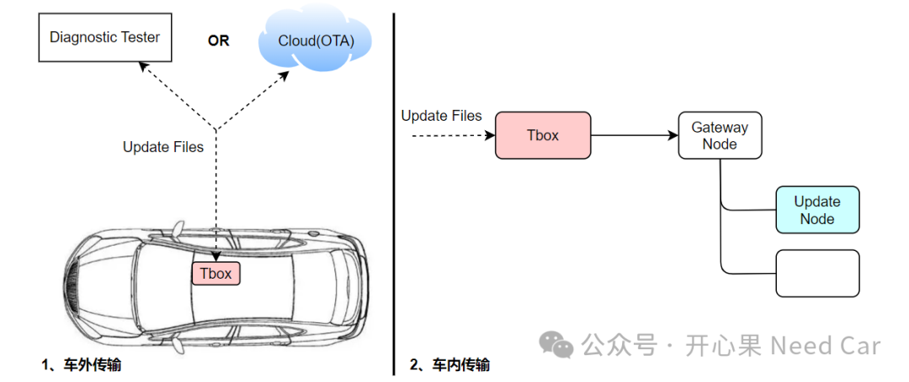

返回目录Bootloader开发：如何提高软件刷写效率？
开心果 Need Car · 2024-06-24T07:05:00+08:00 · 微信原文
付费文章：当前仅保存公开试读部分，全文尚未获取。
随着车载功能的拓展和迭代，软件的代码量节节攀升。随着代码量的增加，软件升级所需时间也越来越长，因此，提高软件的刷写效率，已然是一个必须正视的问题。我们知道，如果选用的总线确定以后，对应的通信速率也会随之进行约束，eg：CAN(FD) 500/2000Kbps、Flexray 10Mbps、以太网100/1000Mbps等。也就是说，升级的通信速率上限由硬件决定，如果在硬件性能不变的情况下，想提高软件刷写效率，只得从软件层面寻求突破。本文，就从软件层面，聊一聊，如何提高刷写效率。不管是云端还是诊断设备下发的软件升级包，均需要先和车端对外控制器连接（eg：TBox），之后由该控制器将软件升级包通过网关节点（Gateway Node）转给目标升级节点（Update Node）。整个链路可以分为两个部分：车外传输及车内传输。示意如下：
对于车外及物理链路的信息传输，时间固定。当然，有人可能会说，队列刷写（Queue Program）可以消除这个时间影响，这不是本文聚焦的点，不做过多赘述。所以，当所有控制器的物理器件选型和通信速率确定以后，从硬件寻求提升升级效率的方式基本堵住。提高软件升级效率的方案有多种，eg：队列刷写、并行刷写、静默升级、A/B分区（回滚）、更换更高通信速率设备、优化软件...方案似乎很多，但是，受限于项目硬件或者特定背景原因，并不是所有方案均可以直接套用到实际项目。既然优化软件也可以提高升级效率，又该如何从软件着手呢？或者说，你用过哪些方式呢？减少软件层级、FIFO+中断、降低for循环使用...然而，本文要聊一聊如何从Flash Driver提高刷写效率。